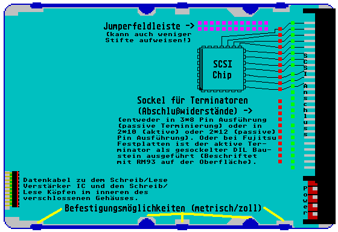

Previous
Next
TOC
Zum dritten: Falls die Versorgung der Terminatoren über TermPower
nicht ganz sauber ist oder schwankt (was auch innerhalb gewisser
Toleranzen auch erlaubt ist), filtert das ein aktiver Terminator
weitestgehend aus, der Pegel ist konstant. Passive Terminatoren
leiten Störungen und Spannungswechsel auf dieser Leitung ungefil-
tert zu den Signalleitungen durch.
Eine Aufsicht auf eine SCSI Festplatte mit der Lage der verschiedenen
Komponenten auf der Platine:

Der Wellenwiderstand
Man darf nicht vergessen, daß wir es hier mit elektromagnetischen
Schwingungen und Wellen zu tun haben, die an BEIDEN Enden mit dem
Wellenwiderstand der Leitung abgeschlossen werden müssen, damit sie
nichts zurückkommt. Bei kurzen Kabeln fallen dann Reflexion und
ursprüngliches Signal noch einigermaßen zusammen, so das daß nicht
sonderlich stört. Bei langen Kabeln sind Signal und Reflexion schon
deutlich getrennt und bei ausreichendem Pegel des zusätzlichen Sig-
nales kann der Bus schon ganz schön durcheinandergebracht werden.
Der Wellenwiderstand Zw ist die Kenngröße einer Leitung, die angibt,
mit welchem Widerstand eine Leitung abgeschlossen werden muß, damit
eine Anpassung erfolgt.
Anpassung - Ist der anschluß eines Netzwerkes an einem Lastwider-
stand, der gleich dem Innenwiderstand eines Netzwerks ist. Bei Lei-
tungen versteht man darunter den Abschluß der Leitung mit ihrem Wel-
lenwiderstand. Bei Anpassung wird im Abschlußwiderstand die maximale
Leistung umgesetzt.
Ein einfaches Beispiel:
Beim Radio/Fernsehwellemempfang ist die Anpassung zwischen der Em-
pfangsantenne dem Übertragungskabel und dem Empfangsgerät wichtig.
weiterblättern
Kapitel Rund um den SCSI BUS, Seite 13